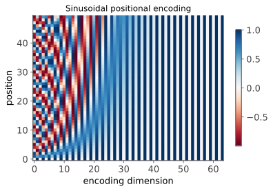
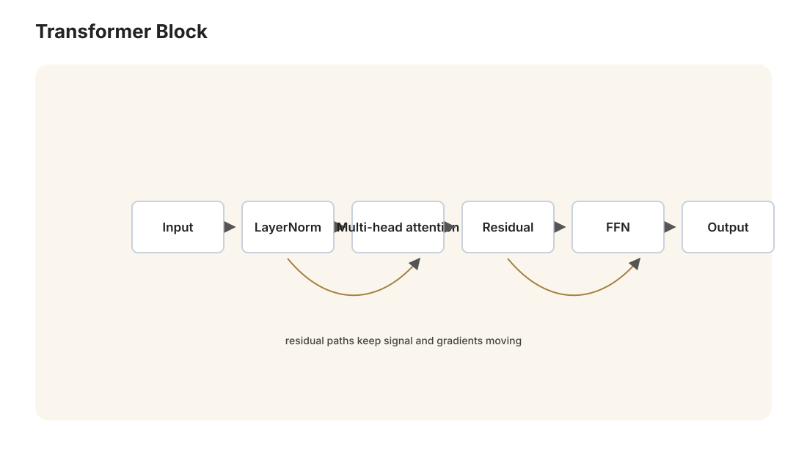
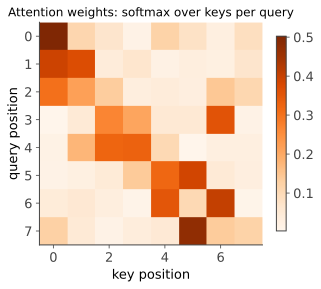

本讲目录
第 06 讲 · 从序列建模到 Transformer
诞生场景：CNN 吃定了图像，但语言是另一种生物：句子变长、顺序敏感（"猫追狗"≠"狗追猫"）、依赖可以横跨很远（"那只我上周在邻居家院子里见过的猫……它"）。为序列而生的 RNN 统治了 NLP 十年，却始终被两个毛病纠缠：记不住远处、算得太慢。2017 年，Google 的八人小组扔出一篇标题狂妄的论文——《Attention Is All You Need》：把循环彻底扔掉，只留注意力。这个叫 Transformer 的架构不仅吞掉了 NLP，后来还回头吞掉了视觉，成为今天一切大模型的骨架。本讲从 RNN 的困境出发，一步步推到 Transformer 的每个部件——知其然，更知其为什么非这么设计不可。
1. 前置：词怎么变成向量

神经网络吃的是向量，第一步是把词变成向量。独热编码（每个词一个坐标轴）维数爆炸且任意两词正交——"猫"和"狗"的相似性无处安放。解法是词嵌入（word embedding）：给每个词学一个稠密向量（如 300 维），让语义相近的词向量相近。word2vec（2013）的训练思想极简：用一个词预测它的上下文（"分布假设"：意思相近的词出现在相似的语境里）。副产品惊艳了所有人：向量空间里 \(\vec{v}_{\text{king}} - \vec{v}_{\text{man}} + \vec{v}_{\text{woman}} \approx \vec{v}_{\text{queen}}\)——语义关系变成了线性代数。记住这个思想："预测上下文"这个朴素目标能逼出语义表示——把它推到极限就是第 07 讲的 GPT。
2. RNN：给网络装上记忆
2.1 结构
处理变长序列的自然想法：逐词读入，维护一个"记忆"向量 \(h_t\)（隐状态），每读一个词就更新：
同一组参数 \((W_h, W_x)\) 在所有时间步共享——这是 CNN"空间上参数共享"的时间版：处理第 3 个词和第 300 个词的规则相同（平移共性再现，归纳偏置又一次注入结构）。训练用沿时间反向传播（BPTT）：把网络按时间展开成一个"深度 = 序列长度"的网络，套第 04 讲的反向传播。
2.2 死穴一：梯度沿时间消失（完整分析）
麻烦也在"深度 = 序列长度"里。看远距离依赖的梯度：损失在 \(t\) 时刻，信息在 \(k\) 时刻（\(k \ll t\)），链式法则：
对范数估计：\(\tanh' \leq 1\)，故 \(\left\| \frac{\partial h_t}{\partial h_k} \right\| \leq \|W_h\|^{\,t-k}\)（谱范数）。设 \(\lambda_{\max}\) 是 \(W_h\) 的最大奇异值：
- \(\lambda_{\max} < 1\)：梯度随距离指数衰减——第 100 个词收不到第 3 个词的训练信号，长程依赖学不会；
- \(\lambda_{\max} > 1\)：可能指数爆炸（实践中靠梯度裁剪压制）。
这正是第 04 讲梯度消失的时间轴版本，但更无解：CNN 可以少堆几层，序列长度却是任务给定的。
2.3 LSTM：加法通路的救赎
LSTM（Hochreiter & Schmidhuber 1997——作者正是那位 1991 年诊断出梯度消失的人）给记忆开了一条专用通道。核心是细胞状态 \(c_t\)，用三个可学习的"门"（sigmoid 输出，取值 0~1，逐元素乘＝软开关）控制读写：
盯住带星号的那行：\(c_t\) 的更新是加法。求导 \(\frac{\partial c_t}{\partial c_{t-1}} = \mathrm{diag}(f_t)\)——不再有 \(W\) 连乘；只要遗忘门开着（\(f \approx 1\)），梯度就沿细胞状态近乎无衰减地流回远处。和 ResNet 的 \(y = x + F(x)\) 是同一个药方：用加法通路替换连乘通路（LSTM 早了 18 年）。LSTM 与其简化版 GRU 撑起了 2014–2017 年的 NLP：机器翻译、语音识别（Siri）、输入法联想。
2.4 seq2seq 与注意力的初登场
机器翻译需要"读完一句话，写出另一句话"——seq2seq（2014）：一个 RNN（编码器）把源句压成一个向量，另一个 RNN（解码器）从这个向量展开生成译文。立刻暴露信息瓶颈：不管句子多长，全部意义都要挤过一个固定维数的向量——长句翻译质量断崖式下跌。
Bahdanau et al. (2014) 的修复从根上改变了历史：别压成一个向量，解码器每生成一个词，回头"看一眼"源句的所有位置，按相关性加权：
生成"银行"这个词时，注意力权重 \(\alpha\) 自动集中在源句的 "bank" 上——软对齐是学出来的。这就是注意力机制（attention）：本是 RNN 的补丁，三年后人们意识到，补丁比本体重要。
2.5 死穴二：串行
RNN 还有个与生俱来的工程死穴：\(h_t\) 依赖 \(h_{t-1}\)，必须逐词串行计算。GPU 是并行机器（第 05 讲的燃料），却只能干等序列一格格走完；训练长文档慢到无法忍受，模型规模因此上不去。总结 RNN 的两宗罪：远距离信号衰减（学不好）+ 串行（练不快）。Transformer 对症下的药是同一味。
3. Transformer：注意力就是全部


2017 年的暴论：把循环整个扔掉。让序列里每个词直接与所有词（包括自己）两两交互——自注意力（self-attention）。任意两词之间的路径长度从 RNN 的 \(O(n)\) 降到 \(O(1)\)（信号不衰减），且所有位置的计算完全独立（GPU 满载并行）。两宗罪一次清账。代价后面说。
3.1 Query / Key / Value
自注意力的运作可以类比一次数据库检索。每个词的嵌入向量 \(x_i \in \mathbb{R}^{d_{\text{model}}}\) 经三个学习到的线性投影，生成三种角色：
词 \(i\) 更新自己的表示时：拿自己的 \(q_i\) 与所有词的 \(k_j\) 做内积算相关度，softmax 归一化成权重，再对所有 \(v_j\) 加权求和。矩阵形式（\(Q, K, V \in \mathbb{R}^{n \times d_k}\) 按行堆叠）：
一个具体图景：处理"它"这个词时，\(q_{\text{它}}\) 与 \(k_{\text{猫}}\) 内积很大 → "它"的新表示大量混入 \(v_{\text{猫}}\) → 指代消解在一层内完成，无论"猫"隔了 3 个词还是 300 个词。对比 word2vec 的静态词向量（"苹果"只有一个向量），自注意力产出的是上下文相关的表示——"苹果发布会"和"苹果真甜"里的"苹果"，走出注意力层时已是两个不同向量。
3.2 为什么除以 \(\sqrt{d_k}\)：完整推导
这个不起眼的分母是面试高频题，更是理解"训练稳定性"的好样本。设 \(q, k \in \mathbb{R}^{d_k}\) 的各分量独立、均值 0、方差 1（初始化时近似成立）。内积 \(q^\top k = \sum_{i=1}^{d_k} q_i k_i\) 的均值与方差：
（用了独立性与 \(\mathrm{Var}(q_i k_i) = \mathbb{E}[q_i^2]\mathbb{E}[k_i^2] - (\mathbb{E}[q_i k_i])^2\)。）即内积的标准差为 \(\sqrt{d_k}\)：维数越高，分数天然越散。\(d_k = 64\) 时分数标准差为 8，喂给 softmax 意味着 \(e^{8}\) 级别的比值——softmax 输出趋近 one-hot（饱和），而饱和区的梯度趋近 0（softmax 的 Jacobian 元素含 \(p_i(1-p_i)\) 因子，\(p\) 贴近 0/1 时归零）——注意力还没开始学就"梯度死亡"。除以 \(\sqrt{d_k}\) 把方差归一回 1，softmax 工作在灵敏区。又一次，架构细节的动机是保梯度存活——从 ReLU、LSTM、ResNet 到这里，同一主题第四次出现。
3.3 多头注意力
一次注意力 = 一种"看法"（比如盯指代关系）。但"它追老鼠"里，"它"同时需要关注指代（猫）和动作（追）。多头（multi-head）：把 \(d_{\text{model}}\) 切成 \(h\) 份（如 8 头 × 64 维），每头有独立的 \(W^Q_i, W^K_i, W^V_i\)，各自做注意力，结果拼接再线性混合：
各头在不同的子空间里学习不同类型的关系（训练后可视化确实看到：有的头盯句法、有的头盯共指、有的头盯相邻词）。计算量与单个全维大头相同，表达力更强。
3.4 位置编码：把语序找回来
注意力有个"bug"：它是集合运算——打乱输入词序，输出只是同样打乱（对 3.1 的公式验证置换等变性：行置换 \(PX\) 给出 \(P\,\mathrm{Attention}(X)\)）。"猫追狗"与"狗追猫"不再有区别，语序信息必须显式补进去。原论文的正弦位置编码：位置 \(pos\) 的编码向量按维度对 \((2i, 2i{+}1)\) 定义为
加到词嵌入上。为什么选三角函数？关键性质：\(PE_{pos+\Delta}\) 是 \(PE_{pos}\) 的线性变换（且变换只依赖 \(\Delta\) 不依赖 \(pos\)）。证明：记 \(\omega_i = 10000^{-2i/d}\)，由和角公式，
——每一对维度上是一个只依赖 \(\Delta\) 的旋转矩阵。\(\blacksquare\) 于是"相隔 \(\Delta\) 个词"这种相对位置关系对模型是一个线性可学的模式；不同维度的 \(\omega_i\) 构成从高频到低频的"位置进制表"，任意长度可外推。（现代 LLM 多用它的近亲 RoPE——直接把 \(q, k\) 向量按位置旋转，出发点同源；也有直接学位置向量的方案。）
3.5 组装整机
一个 Transformer 块 = 两个子层，每个子层都套上第 05 讲的两件法宝——残差连接与归一化：
其中 \(\mathrm{FFN}(x) = W_2\, \mathrm{ReLU}(W_1 x + b_1) + b_2\) 是逐位置独立的两层全连接（中间维度通常 \(4d\)，占了模型大部分参数——一种流行解读：注意力负责"通信"，FFN 负责"存储知识与计算"）。LayerNorm 对每个位置自己的特征维度做标准化（区别于 BatchNorm 跨样本），不依赖批量、天然适配变长序列。堆 \(N\) 个这样的块（原论文 6 个，GPT-3 96 个），就是整机。
生成文本还需要一个部件——因果掩码（causal mask）：生成第 \(t\) 个词时不许偷看 \(t\) 之后的词，实现上把 \(QK^\top\) 的上三角置 \(-\infty\)（softmax 后即 0）。三种经典配置：
| 架构 | 注意力 | 代表 | 擅长 |
|---|---|---|---|
| Encoder-only | 双向（无掩码） | BERT (2018) | 理解：分类、检索 |
| Decoder-only | 单向（因果掩码） | GPT 系列 | 生成：续写一切 |
| Encoder–Decoder | 双向 + 交叉注意力 | T5、翻译模型 | 序列到序列 |
后面的故事（第 07 讲）由 decoder-only 主演。
3.6 代价与账本
自注意力的复杂度是 \(O(n^2 d)\)（\(n \times n\) 的注意力矩阵），RNN 是 \(O(n d^2)\)：
| 每层计算量 | 串行步数 | 最远信息路径 | |
|---|---|---|---|
| RNN | \(O(n d^2)\) | \(O(n)\) | \(O(n)\) |
| 自注意力 | \(O(n^2 d)\) | \(O(1)\) | \(O(1)\) |
Transformer 用"对序列长度平方"的计算量，换来了零串行与零距离。2017 年 \(n\) 只有几百，这笔交易血赚；今天上下文拉到十万、百万 token，\(n^2\) 就是"长上下文为什么贵"（第 08 讲的现实约束）的直接根源，也催生了 FlashAttention、稀疏/线性注意力等一整个研究方向。
还有一层更深的意味：对比 CNN（硬编码局部性）与 RNN（硬编码顺序递归），Transformer 的结构先验最弱——它只假设"表示间的两两交互有用"，其余一切交给数据。第 01 讲的偏差–方差逻辑预言：弱先验模型需要更多数据，但数据管够时上限更高。于是当数据真的管够（整个互联网），Transformer 不仅统治语言，还以 ViT（2020，把图像切成 16×16 的块当"词"处理）反攻视觉，把 CNN 从王座上请了下去。一个架构通吃所有模态——这为"规模化"铺平了道路，那正是下一讲的主题。
本讲小结
| 概念 | 一句话 |
|---|---|
| RNN | 时间上共享参数的递归记忆；死穴 = 梯度沿时间指数衰减 + 串行 |
| LSTM | 门控 + 细胞状态加法通路（ResNet 的先声），缓解而非根治 |
| 注意力起源 | seq2seq 信息瓶颈的补丁：按相关性加权回看全句 |
| 自注意力 | \(\mathrm{softmax}(QK^\top/\sqrt{d_k})V\)；任意两词路径 \(O(1)\)，完全并行 |
| \(\sqrt{d_k}\) | 内积方差 \(= d_k\)，不除则 softmax 饱和、梯度死亡 |
| 多头 | 多个子空间学不同关系类型 |
| 位置编码 | 注意力是集合运算，语序需显式注入；三角编码使相对位移线性可学 |
| Transformer 块 | (注意力 + FFN) × 残差 × LayerNorm，堆 N 层 |
| 权衡 | \(O(n^2)\) 换零串行零距离；弱先验 + 大数据 = 通吃 |
动手：跑 labs/lab06_attention_transformer.py——先用纯 numpy 实现缩放点积注意力并可视化注意力矩阵（看"它"盯上"猫"），再用 PyTorch 训练一个 mini char-GPT 在小语料上学会生成文本。你将在几分钟内目睹一个 Transformer 从乱码进化到通顺。
延伸阅读：Vaswani et al. "Attention Is All You Need" (2017)；Jay Alammar "The Illustrated Transformer"（图解经典，搜索可得）；Karpathy 的视频 "Let's build GPT from scratch"（lab06 的灵感来源）。
下一讲：架构定了，接下来发生的事情简单粗暴——把它变大。大十倍、大百倍、大万倍。为什么变大就能变强？什么时候停？2020 年的一篇论文给出了幂律答案，OpenAI 据此押上全部筹码，大语言模型的时代开始了。